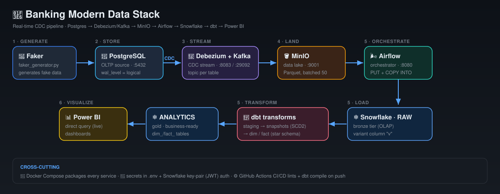

<!DOCTYPE html>
<html lang="en">
<head>
<meta charset="UTF-8">
<meta name="viewport" content="width=device-width, initial-scale=1.0">
<title>🏦 Banking Data Stack — Complete Guide</title>
<style>
  :root{
    --bg:#0d1117; --panel:#161b22; --panel2:#1c2230; --border:#2d333b;
    --text:#e6edf3; --muted:#8b949e; --accent:#58a6ff; --green:#3fb950;
    --red:#f85149; --yellow:#d29922; --purple:#bc8cff; --cmd:#0b0f14;
  }
  *{box-sizing:border-box;margin:0;padding:0}
  body{font-family:-apple-system,Segoe UI,Roboto,Helvetica,Arial,sans-serif;
    background:var(--bg);color:var(--text);line-height:1.65;font-size:15px}
  a{color:var(--accent);text-decoration:none}
  code,pre{font-family:"SF Mono",Menlo,Consolas,monospace}
  h2{font-size:23px;margin:6px 0 14px;padding-bottom:8px;border-bottom:1px solid var(--border)}
  h3{font-size:17px;margin:22px 0 10px;color:var(--purple)}
  p{margin:10px 0;color:#d7dee6}
  ul{margin:10px 0 10px 22px}li{margin:4px 0}

  .wrap{display:flex;max-width:1500px;margin:0 auto}
  aside{width:280px;flex:0 0 280px;position:sticky;top:0;height:100vh;overflow-y:auto;
    background:var(--panel);border-right:1px solid var(--border);padding:22px 14px}
  main{flex:1;padding:34px 46px;min-width:0;max-width:1000px}
  @media(max-width:900px){aside{display:none}main{padding:20px}}

  .brand{font-size:18px;font-weight:700;margin-bottom:2px}
  .brand small{display:block;color:var(--muted);font-size:11px;font-weight:400;margin-bottom:14px}
  .search{width:100%;background:var(--panel2);border:1px solid var(--border);border-radius:9px;
    color:var(--text);padding:10px 13px;font-size:13.5px;margin-bottom:16px}
  .search:focus{outline:none;border-color:var(--accent)}
  aside .grp{font-size:10.5px;text-transform:uppercase;letter-spacing:.09em;color:var(--muted);margin:16px 0 6px;padding-left:8px}
  aside a{display:block;padding:7px 11px;border-radius:7px;color:var(--text);font-size:13px;margin-bottom:1px}
  aside a:hover{background:var(--panel2)}
  aside a.active{background:rgba(88,166,255,.15);color:var(--accent)}

  .hero{background:linear-gradient(135deg,#161b22,#1c2c4a);border:1px solid var(--border);
    border-radius:14px;padding:26px 30px;margin-bottom:22px}
  .hero h1{font-size:25px;margin-bottom:6px}.hero p{color:var(--muted)}
  .pipe{display:flex;flex-wrap:wrap;gap:7px;margin-top:16px}
  .pipe span{background:var(--panel2);border:1px solid var(--border);border-radius:20px;padding:4px 12px;font-size:12px;white-space:nowrap}
  .pipe span:not(:last-child)::after{content:"→";color:var(--accent);margin-left:8px;font-weight:700}

  section{display:none;animation:fade .25s}
  section.active{display:block}
  @keyframes fade{from{opacity:0;transform:translateY(6px)}to{opacity:1}}

  pre{background:var(--cmd);border:1px solid var(--border);border-radius:10px;padding:14px 16px;
    overflow-x:auto;position:relative;font-size:12.8px;margin:12px 0}
  pre .copy{position:absolute;top:8px;right:8px;background:var(--panel2);border:1px solid var(--border);
    color:var(--muted);border-radius:6px;padding:3px 9px;font-size:11px;cursor:pointer;font-family:inherit}
  pre .copy:hover{color:var(--text);border-color:var(--accent)}
  pre code{color:#c9d1d9;white-space:pre}
  .tok-c{color:#8b949e}.tok-k{color:#ff7b72}.tok-s{color:#a5d6ff}

  table{width:100%;border-collapse:collapse;margin:14px 0;font-size:13px}
  th,td{border:1px solid var(--border);padding:8px 11px;text-align:left;vertical-align:top}
  th{background:var(--panel2);color:#fff}
  td code{background:var(--panel2);padding:1px 5px;border-radius:4px;font-size:12px}

  .callout{border-radius:10px;padding:12px 15px;margin:12px 0;border-left:4px solid;font-size:13.7px}
  .c-prob{background:rgba(248,81,73,.08);border-color:var(--red)}
  .c-fix{background:rgba(63,185,80,.08);border-color:var(--green)}
  .c-lesson{background:rgba(210,153,34,.1);border-color:var(--yellow)}
  .c-note{background:rgba(88,166,255,.08);border-color:var(--accent)}
  .tag{display:inline-block;font-size:10px;font-weight:700;text-transform:uppercase;letter-spacing:.05em;padding:2px 8px;border-radius:20px;margin-right:8px}
  .t-prob{background:var(--red);color:#fff}.t-fix{background:var(--green);color:#04260c}
  .t-lesson{background:var(--yellow);color:#241a00}.t-note{background:var(--accent);color:#04132b}

  .ascii{background:var(--cmd);border:1px solid var(--border);border-radius:10px;padding:16px;
    font-family:"SF Mono",monospace;font-size:12px;line-height:1.5;white-space:pre;overflow-x:auto;color:#a5d6ff}
  .stats{display:grid;grid-template-columns:repeat(4,1fr);gap:12px;margin-bottom:20px}
  @media(max-width:640px){.stats{grid-template-columns:repeat(2,1fr)}}
  .stat{background:var(--panel);border:1px solid var(--border);border-radius:11px;padding:14px;text-align:center}
  .stat b{display:block;font-size:23px;color:var(--accent)}.stat small{color:var(--muted);font-size:11.5px}
  footer{color:var(--muted);font-size:12px;text-align:center;padding:28px 0 8px;border-top:1px solid var(--border);margin-top:30px}
</style>
</head>
<body>
<div class="wrap">
  <aside>
    <div class="brand">🏦 Data Stack<small>Complete Guide</small></div>
    <input class="search" id="search" placeholder="🔎 Search…">
    <nav id="nav"></nav>
  </aside>
  <main id="main"></main>
</div>

<script>
/* ============ CONTENT ============ */
const SECTIONS = [
{id:"overview", grp:"Start", icon:"📖", title:"Overview", html:`
  <div class="hero"><h1>🏦 Banking Modern Data Stack</h1>
    <p>A real-time banking pipeline — explained end to end. Architecture, every folder, every line of code, the concepts, commands, and interview questions.</p>
    <div class="pipe"><span>Postgres</span><span>Debezium+Kafka</span><span>MinIO</span><span>Airflow</span><span>Snowflake</span><span>dbt</span><span>Power BI</span></div>
  </div>
  
  <a href="ui-tour.html" style="display:block;text-align:center;background:linear-gradient(135deg,#1f6feb,#a371f7);color:#fff;padding:14px;border-radius:12px;font-weight:700;margin-bottom:22px;text-decoration:none">🖥️ Open the Interactive UI Tour → click pins on each tool's screen to learn what every part means</a>
  <div class="stats">
    <div class="stat"><b>6</b><small>Pipeline stages</small></div>
    <div class="stat"><b>7</b><small>Core tools</small></div>
    <div class="stat"><b>50+</b><small>Commands</small></div>
    <div class="stat"><b>12</b><small>Bugs fixed</small></div>
  </div>
  <h2>What problem does this solve?</h2>
  <p>A bank has two opposite needs that can't share one database:</p>
  <table><tr><th>Need</th><th>System</th><th>Tech</th></tr>
   <tr><td><b>Run the bank</b> — fast writes ("record this transfer now")</td><td>OLTP</td><td>PostgreSQL</td></tr>
   <tr><td><b>Understand the bank</b> — heavy reads ("spend per customer")</td><td>OLAP</td><td>Snowflake</td></tr></table>
  <p>Running analytics on the live DB would slow real banking. So we build a <b>pipeline</b> that copies changes OLTP → OLAP, cleans + models them into a star schema <b>with history (SCD2)</b>, automatically and in near real-time.</p>
  <div class="callout c-note"><span class="tag t-note">Analogy</span>OLTP is the busy <b>kitchen</b>; OLAP is the manager's <b>office</b>. You don't do paperwork in the kitchen — you copy receipts to the office. This pipeline is the conveyor belt between them.</div>`},

{id:"architecture", grp:"Start", icon:"🗺️", title:"Architecture & Flow", html:`
  <h2>Architecture & Data Flow</h2>
  <div class="ascii"> data-geneator/faker_generator.py        ← generate fake banking data
        │  INSERT
        ▼
 PostgreSQL  (banking, OLTP, wal_level=logical)
        │  Debezium captures INSERT/UPDATE/DELETE  (CDC)
        ▼
 Kafka topics  banking_server.public.{customers,accounts,transactions}
        │  consumer/kafka_to_minio.py   (batch 50 → Parquet)
        ▼
 MinIO  (S3-compatible "raw" bucket)     ← data lake / landing
        │  Airflow DAG: minio_to_snowflake_dag.py  (PUT + COPY INTO)
        ▼
 Snowflake  BANKING.RAW.v  (variant)     ← bronze tier (OLAP)
        │  dbt: banking_dbt/
        ▼
 staging(views) → snapshots(SCD2) → dim_/fact_   in BANKING.ANALYTICS
        │  direct query
        ▼
 Power BI dashboard</div>
  <h3>The 6 stages</h3>
  <table><tr><th>#</th><th>Stage</th><th>Does</th><th>Tool</th></tr>
   <tr><td>1</td><td>Generate</td><td>create fake data</td><td>Python + Faker</td></tr>
   <tr><td>2</td><td>Store (OLTP)</td><td>structured, ACID storage</td><td>PostgreSQL</td></tr>
   <tr><td>3</td><td>Stream (CDC)</td><td>capture &amp; stream changes</td><td>Debezium + Kafka</td></tr>
   <tr><td>4</td><td>Land (lake)</td><td>save as Parquet</td><td>MinIO (S3)</td></tr>
   <tr><td>5</td><td>Load + Transform</td><td>warehouse + star schema + history</td><td>Airflow + Snowflake + dbt</td></tr>
   <tr><td>6</td><td>Visualize</td><td>dashboards</td><td>Power BI</td></tr></table>`},

{id:"stack", grp:"Start", icon:"🧰", title:"Tech Stack & Why", html:`
  <h2>Tech Stack — and why each was chosen</h2>
  <table><tr><th>Tool</th><th>Role</th><th>Why (interview-ready)</th></tr>
   <tr><td><b>PostgreSQL</b></td><td>source OLTP</td><td>Structure + <b>ACID</b>. Money can't be "eventually consistent."</td></tr>
   <tr><td><b>Debezium</b></td><td>CDC</td><td>Reads the <b>write-ahead log</b> → zero load on the live DB.</td></tr>
   <tr><td><b>Kafka</b></td><td>streaming buffer</td><td>Decouples producers/consumers; durable; offsets survive restarts.</td></tr>
   <tr><td><b>MinIO</b></td><td>data lake</td><td>Free, local, <b>S3-compatible</b> → cloud-portable code.</td></tr>
   <tr><td><b>Snowflake</b></td><td>warehouse</td><td>Separates <b>storage from compute</b>; scales analytics independently.</td></tr>
   <tr><td><b>dbt</b></td><td>transformations</td><td>SQL as tested, documented models; built-in <b>SCD2</b>.</td></tr>
   <tr><td><b>Airflow</b></td><td>orchestration</td><td>Schedules + retries + monitors recurring jobs.</td></tr>
   <tr><td><b>Parquet</b></td><td>file format</td><td><b>Columnar</b>, typed, compressed → ideal for analytics.</td></tr></table>`},

{id:"folders", grp:"Start", icon:"📂", title:"Folder-by-Folder", html:`
  <h2>Folder-by-Folder</h2>
  <table><tr><th>Path</th><th>Purpose</th></tr>
  <tr><td><code>data-geneator/faker_generator.py</code></td><td>generate + insert fake data</td></tr>
  <tr><td><code>postgres/schema.sql</code></td><td>DDL for the 3 source tables</td></tr>
  <tr><td><code>kafka-debezium/generate_and_post_connector.py</code></td><td>register the Debezium connector</td></tr>
  <tr><td><code>consumer/kafka_to_minio.py</code></td><td>Kafka → Parquet → MinIO</td></tr>
  <tr><td><code>docker/dags/minio_to_snowflake_dag.py</code></td><td>Airflow DAG: MinIO → Snowflake RAW</td></tr>
  <tr><td><code>docker/dags/scd_snapshots.py</code></td><td>Airflow DAG: daily dbt snapshot + marts</td></tr>
  <tr><td><code>banking_dbt/models/staging/</code></td><td>parse variant, dedup (views)</td></tr>
  <tr><td><code>banking_dbt/snapshots/</code></td><td>SCD2 history tables</td></tr>
  <tr><td><code>banking_dbt/models/marts/</code></td><td>dim_/fact_ star schema</td></tr>
  <tr><td><code>docker-compose.yml</code></td><td>defines every container</td></tr>
  <tr><td><code>.env</code> (×5) + <code>keys/rsa_key.p8</code></td><td>secrets — never committed</td></tr></table>
  <div class="callout c-note"><span class="tag t-note">Quirks</span>folder is misspelled <code>data-geneator</code>; CI folder is <code>.github/workflow</code> (GitHub needs <code>workflows</code>, plural); <code>READE.md</code> → <code>README.md</code>.</div>`},

{id:"source", grp:"Stages", icon:"🐘", title:"1–2 · Source", html:`
  <h2>Stage 1–2 · Source (Postgres + Faker)</h2>
  <h3>postgres/schema.sql</h3>
  <pre><button class="copy">Copy</button><code>CREATE TABLE customers (
  id SERIAL PRIMARY KEY,                              -- auto unique id (indexed)
  first_name VARCHAR(100) NOT NULL,
  email VARCHAR(255) UNIQUE NOT NULL,                -- no duplicate emails
  created_at TIMESTAMP WITH TIME ZONE DEFAULT now()  -- used for SCD2 ordering
);
CREATE TABLE accounts (
  id SERIAL PRIMARY KEY,
  customer_id INT NOT NULL REFERENCES customers(id) ON DELETE CASCADE,  -- FK
  balance NUMERIC(18,2) NOT NULL CHECK (balance >= 0),                  -- exact money, never < 0
  currency CHAR(3) DEFAULT 'USD'
);
CREATE TABLE transactions (
  id BIGSERIAL PRIMARY KEY,                           -- BIG: millions of rows
  account_id INT NOT NULL REFERENCES accounts(id) ON DELETE CASCADE,
  txn_type VARCHAR(50) NOT NULL,                      -- DEPOSIT|WITHDRAWAL|TRANSFER
  amount NUMERIC(18,2) CHECK (amount > 0),
  related_account_id INT NULL                         -- only for transfers
);</code></pre>
  <table><tr><th>Concept</th><th>Meaning</th></tr>
   <tr><td><code>SERIAL / BIGSERIAL</code></td><td>auto-increment id (BIG = 64-bit for huge tables)</td></tr>
   <tr><td><code>NOT NULL / UNIQUE / CHECK</code></td><td><b>constraints</b> — the DB rejects bad data</td></tr>
   <tr><td><code>REFERENCES … ON DELETE CASCADE</code></td><td>foreign key; delete parent → children auto-deleted</td></tr>
   <tr><td><code>NUMERIC(18,2)</code></td><td>exact decimal — <b>never FLOAT for money</b></td></tr></table>
  <h3>faker_generator.py</h3>
  <ul><li>Each loop: <b>10 customers → 20 accounts → 50 transactions</b>, every 2s.</li>
  <li><code>RETURNING id</code> grabs the new PK so the next table can reference it.</li>
  <li><code>autocommit=True</code> → inserts commit instantly → Debezium sees them immediately.</li></ul>
  <div class="callout c-lesson"><span class="tag t-lesson">Mistake</span>Inserting accounts before their customer exists → FK violation. The code inserts customers first.</div>`},

{id:"cdc", grp:"Stages", icon:"🔌", title:"3–4 · CDC", html:`
  <h2>Stage 3–4 · CDC (Debezium + Kafka + Consumer)</h2>
  <h3>generate_and_post_connector.py — register the connector</h3>
  <pre><button class="copy">Copy</button><code>"connector.class": "io.debezium.connector.postgresql.PostgresConnector",
"database.hostname": os.getenv("POSTGRES_HOST"),   # 'postgres' = service name, NOT localhost
"plugin.name": "pgoutput",                          # Postgres logical-decoding plugin
"slot.name": "banking_slot",                        # replication slot = bookmark in the WAL
"table.include.list": "public.customers,public.accounts,public.transactions",
"topic.prefix": "banking_server"                    # → topic banking_server.public.customers …</code></pre>
  <table><tr><th>Concept</th><th>Plain words</th></tr>
   <tr><td><b>CDC</b></td><td>read the DB's write-ahead log instead of querying tables → no load/locks</td></tr>
   <tr><td><b>Replication slot</b></td><td>bookmark so Debezium resumes exactly where it stopped</td></tr>
   <tr><td><b>pgoutput</b></td><td>turns binary WAL → change events (needs wal_level=logical)</td></tr></table>
  <h3>kafka_to_minio.py — Kafka → lake</h3>
  <pre><button class="copy">Copy</button><code>consumer = KafkaConsumer(
    'banking_server.public.customers', ...,
    auto_offset_reset='earliest',      # new group reads from the oldest message
    enable_auto_commit=True,
    group_id=os.getenv("KAFKA_GROUP"), # offset stored per group → resume after restart
    max_partition_fetch_bytes=262144,  # FIX: kafka-python 3.0.0 aborts fetches >= 1MB
    fetch_max_bytes=262144,
    value_deserializer=lambda x: json.loads(x.decode('utf-8')),
)
for message in consumer:
    record = message.value.get("payload", {}).get("after")  # Debezium wraps row in payload.after
    buffer[topic].append(record)
    if len(buffer[topic]) >= 50:       # batch 50 → one Parquet (avoids small-files problem)
        write_to_minio(...)</code></pre>
  <div class="callout c-prob"><span class="tag t-prob">Bug 1</span><code>host.docker.internal</code> resolves on Windows but NOT on Mac → consumer can't connect.</div>
  <div class="callout c-fix"><span class="tag t-fix">Fix</span><code>echo "127.0.0.1 host.docker.internal" | sudo tee -a /etc/hosts</code></div>
  <div class="callout c-prob"><span class="tag t-prob">Bug 2</span>Connects but 0 messages → <code>InvalidReceiveError: Invalid frame length: 1048666</code> (kafka-python 3.0.0 rejects ≥1MB fetches).</div>
  <div class="callout c-lesson"><span class="tag t-lesson">Lesson</span>Consumer connects but never advances? Turn on logging — silent failures hide the cause.</div>`},

{id:"airflow", grp:"Stages", icon:"🌬️", title:"5 · Airflow", html:`
  <h2>Stage 5 · Airflow (the DAGs)</h2>
  <p>Airflow = the <b>manager</b> running jobs on schedule, in order, with retries + logs.</p>
  <h3>minio_to_snowflake_dag.py</h3>
  <pre><button class="copy">Copy</button><code>with DAG(dag_id="minio_to_snowflake_banking",
         schedule_interval="*/1 * * * *",   # cron: every minute
         catchup=False) as dag:              # don't back-run every missed interval
    task1 = PythonOperator(task_id="download_minio", python_callable=download_from_minio)
    task2 = PythonOperator(task_id="load_snowflake", python_callable=load_to_snowflake)
    task1 >> task2                            # task2 waits for task1</code></pre>
  <ul><li><b>DAG</b> = tasks + order (no loops). <b>XCom</b> passes data between tasks.</li>
  <li>Load = <code>PUT file://… @%table</code> (stage parquet) → <code>COPY INTO table … (TYPE=PARQUET)</code>.</li></ul>
  <h3>scd_snapshots.py — keeps the warehouse fresh</h3>
  <pre><button class="copy">Copy</button><code>dbt_snapshot  = BashOperator(bash_command="cd /opt/airflow/banking_dbt && dbt snapshot ...")
dbt_run_marts = BashOperator(bash_command="cd /opt/airflow/banking_dbt && dbt run --select marts ...")
dbt_snapshot >> dbt_run_marts     # snapshots THEN marts (reference repo forgot to wire this!)</code></pre>
  <div class="callout c-note"><span class="tag t-note">Debug in UI</span>Grid view → click a red square → Logs (scroll to bottom = real error) → Graph view (task order).</div>`},

{id:"dbt", grp:"Stages", icon:"🔧", title:"5 · dbt", html:`
  <h2>Stage 5 · dbt (staging → snapshots → marts)</h2>
  <h3>Staging — parse variant + dedup (view)</h3>
  <pre><button class="copy">Copy</button><code>with ranked as (
  select v:id::string as customer_id,            -- v:field = pull from variant JSON + cast
         v:email::string as email,
         v:created_at::timestamp as created_at,
         row_number() over (partition by v:id::string order by v:created_at desc) as rn
  from {{ source('raw','customers') }}
)
select * from ranked where rn = 1                -- keep only the latest version (dedup CDC)</code></pre>
  <h3>Snapshots — SCD2 history</h3>
  <pre><button class="copy">Copy</button><code>{% snapshot customers_snapshot %}
{{ config(target_schema='ANALYTICS', unique_key='customer_id',
          strategy='check', check_cols=['first_name','last_name','email']) }}
SELECT * FROM {{ ref('stg_customers') }}
{% endsnapshot %}</code></pre>
  <p>If a check_col changes for a customer, dbt closes the old row (<code>dbt_valid_to=now</code>) and inserts a new one (<code>dbt_valid_to=NULL</code>). That's SCD2 — full history, no overwrites.</p>
  <h3>Marts — star schema</h3>
  <pre><button class="copy">Copy</button><code>-- dim_customers (TABLE): adds is_current from the snapshot dates
CASE WHEN dbt_valid_to IS NULL THEN TRUE ELSE FALSE END AS is_current
-- fact_transactions (INCREMENTAL): only new rows inserted, joined to get customer_id
{{ config(materialized='incremental', unique_key='transaction_id') }}</code></pre>
  <table><tr><th>Materialization</th><th>Used for</th><th>Why</th></tr>
   <tr><td>view</td><td>staging</td><td>light, always fresh</td></tr>
   <tr><td>table</td><td>dims</td><td>queried often → stored</td></tr>
   <tr><td>incremental</td><td>fact</td><td>huge → only add new rows</td></tr>
   <tr><td>snapshot</td><td>SCD2</td><td>track history</td></tr></table>
  <div class="callout c-lesson"><span class="tag t-lesson">The big one</span><code>dbt run</code> skips snapshots → dims fail. With snapshots, <b>always <code>dbt build</code></b>.</div>`},

{id:"snowflake", grp:"Stages", icon:"❄️", title:"6 · Snowflake", html:`
  <h2>Stage 6 · Snowflake objects</h2>
  <table><tr><th>Object</th><th>What</th><th>This project</th><th>Inspect</th></tr>
   <tr><td>Database</td><td>top container</td><td>BANKING</td><td><code>SHOW DATABASES;</code></td></tr>
   <tr><td>Schema</td><td>folder of tables</td><td>RAW, ANALYTICS</td><td><code>SHOW SCHEMAS IN BANKING;</code></td></tr>
   <tr><td>Warehouse</td><td>compute (≠ storage)</td><td>COMPUTE_WH</td><td><code>SHOW WAREHOUSES;</code></td></tr>
   <tr><td>Role</td><td>privileges (RBAC)</td><td>SVC_AIRFLOW_ROLE</td><td><code>SHOW GRANTS TO ROLE …;</code></td></tr>
   <tr><td>Variant</td><td>any-JSON column</td><td>RAW.*.v</td><td>—</td></tr></table>
  <h3>Permissions (run as ACCOUNTADMIN)</h3>
  <pre><button class="copy">Copy</button><code>GRANT USAGE, CREATE VIEW, CREATE TABLE ON SCHEMA BANKING.ANALYTICS TO ROLE SVC_AIRFLOW_ROLE;
GRANT CREATE SCHEMA ON DATABASE BANKING TO ROLE SVC_AIRFLOW_ROLE;   -- the permanent fix
SELECT customer_id, SUM(amount) FROM BANKING.ANALYTICS.FACT_TRANSACTIONS GROUP BY 1 ORDER BY 2 DESC;</code></pre>
  <div class="callout c-lesson"><span class="tag t-lesson">Lesson</span>Privileges go to <b>roles</b>. Cleanest setup: the transformer role <b>owns</b> the schema it writes to. Ownership beats chasing grants.</div>`},

{id:"infra", grp:"Stages", icon:"⚙️", title:"Infra & CI/CD", html:`
  <h2>Infrastructure & CI/CD</h2>
  <h3>docker-compose.yml</h3>
  <p>Defines: zookeeper → kafka → connect (Debezium) → postgres (<code>wal_level=logical</code>) → minio → airflow (init/scheduler/webserver) + airflow-postgres. <code>\${VAR}</code> pulls from <code>.env</code>; <code>volumes:</code> persist data.</p>
  <h3>Secrets</h3>
  <ul><li><code>.env</code> → <code>\${VAR}</code> / <code>os.getenv()</code>. Never committed.</li>
  <li><code>.env.example</code> = same keys, fake values → committed as docs.</li>
  <li>GitHub Actions secrets hold Snowflake creds for CI.</li></ul>
  <h3>CI/CD</h3>
  <ul><li><b>CI</b> (on push/PR): clean VM → linters + <code>dbt compile</code> → fail = can't merge.</li>
  <li><b>CD</b> (on merge to main): auto-run dbt to deploy.</li>
  <li>Flow: <code>dev</code> → push → CI → PR → merge <code>main</code> → CD.</li></ul>
  <div class="callout c-prob"><span class="tag t-prob">Your repo</span>folder must be <code>.github/workflows</code> (plural) or Actions never run.</div>`},

{id:"ports", grp:"Explore", icon:"🔌", title:"Ports & URLs", html:`
  <h2>🔌 Ports & URLs — what's running where</h2>
  <p>Each tool runs in its own container and opens a <b>port</b> (like an apartment number). Your Mac is the building, <code>localhost</code> is the address, the port is the flat.</p>
  <table><tr><th>Port</th><th>Tool</th><th>What</th><th>Open with</th></tr>
   <tr><td><b>8080</b></td><td>Airflow UI</td><td>pipeline manager dashboard</td><td>http://localhost:8080</td></tr>
   <tr><td><b>9001</b></td><td>MinIO console</td><td>browse your Parquet files</td><td>http://localhost:9001</td></tr>
   <tr><td><b>8085</b></td><td>Kafka UI</td><td>browse topics + messages</td><td>http://localhost:8085</td></tr>
   <tr><td>9000</td><td>MinIO API (S3)</td><td>machine door (code uploads)</td><td>boto3 only</td></tr>
   <tr><td><b>8083</b></td><td>Debezium Connect</td><td>CDC engine REST API</td><td>http://localhost:8083/connectors</td></tr>
   <tr><td><b>5432</b></td><td>Postgres (banking)</td><td>source database</td><td>DBeaver → localhost:5432</td></tr>
   <tr><td>5433</td><td>Postgres (airflow)</td><td>Airflow's own DB</td><td>internal</td></tr>
   <tr><td><b>29092</b></td><td>Kafka (host)</td><td>stream bus from your Mac</td><td>host.docker.internal:29092</td></tr>
   <tr><td>9092</td><td>Kafka (internal)</td><td>stream bus between containers</td><td>kafka:9092</td></tr>
   <tr><td>2181</td><td>Zookeeper</td><td>Kafka's helper</td><td>internal</td></tr></table>
  <div class="callout c-note"><span class="tag t-note">Why 2 doors?</span>Kafka <b>9092</b> = container-to-container (use name <code>kafka</code>); <b>29092</b> = your Mac (use <code>host.docker.internal</code>). Same Kafka, two doors for two kinds of visitors.</div>`},

{id:"explore", grp:"Explore", icon:"🖥️", title:"Explore Every Tool", html:`
  <h2>🖥️ Open it & look around (like you're five)</h2>

  <h3>🐳 Docker Desktop — the control room</h3>
  <p>Open the app → <b>Containers</b>. You'll see rows under <code>bank_de_project</code>.</p>
  <ul><li><b>Green dot ●</b> = running (healthy) — you want these.</li>
  <li><b>Grey "Exited" ○</b> = finished its one job and stopped. <code>airflow-init</code> is <i>supposed</i> to be exited (it created the tables once).</li>
  <li>Click the blue <code>PORT:PORT</code> link → opens that UI. Click a row → <b>Logs</b> (the diary) / <b>Exec</b> (a shell inside).</li></ul>
  <div class="callout c-note"><span class="tag t-note">Like a child</span>Docker = a spaceship dashboard. Each container is a crew member. Green = awake & working; grey = the "setup" crew member who finished and went to sleep.</div>

  <h3>🌬️ Airflow (http://localhost:8080 · admin/admin)</h3>
  <ul><li><b>Home = DAGs list.</b> Each row is a pipeline. The <b>left toggle</b> turns it On/Off. Colored circles = recent runs (🟢 success, 🔴 fail, 🟡 running).</li>
  <li><b>Click a DAG → Grid view.</b> Columns = runs over time, rows = tasks. A <b>red square</b> = that task failed.</li>
  <li><b>Click a red square → Logs → scroll to the bottom</b> = the real error. (This is how we found "password is empty" & "MalformedFraming".)</li>
  <li><b>Graph tab</b> = boxes + arrows showing task order. <b>▶ top-right</b> = run it now.</li></ul>
  <div class="callout c-note"><span class="tag t-note">Like a child</span>Airflow = a teacher with a checklist. The Grid is a report card of green checks and red X's. Red X? Click it, read the note (Logs).</div>

  <h3>🪣 MinIO (http://localhost:9001 · minioadmin/minioadmin)</h3>
  <p>Buckets → <code>raw</code> → <code>customers/</code> → <code>date=…/</code> → <code>*.parquet</code> files.</p>
  <ul><li>Each <code>.parquet</code> file = one batch of <b>50 rows</b> the consumer wrote.</li>
  <li>Path is partitioned by date (<code>date=2026-06-14</code>) so queries skip days they don't need.</li>
  <li>Files appearing here = your conveyor belt is working. ✅</li></ul>
  <div class="callout c-note"><span class="tag t-note">Like a child</span>MinIO = a storage room with labeled boxes. The <code>raw</code> box has 3 shelves; each holds dated envelopes of 50 receipts.</div>

  <h3>📨 Kafka UI (http://localhost:8085) + commands</h3>
  <p>Open <b>http://localhost:8085</b> → <b>Topics</b> → click a topic → <b>Messages</b> to read change events in your browser. <b>Consumers</b> shows lag.</p>
  <pre><button class="copy">Copy</button><code>docker exec kafka kafka-topics --bootstrap-server localhost:9092 --list
# → banking_server.public.{customers,accounts,transactions}  (one topic per table)

docker exec kafka kafka-consumer-groups --bootstrap-server localhost:9092 \\
  --describe --group minio-landing-group
# LAG column = unread messages. LAG 0 = caught up.</code></pre>
  <div class="callout c-note"><span class="tag t-note">Like a child</span>Kafka = a row of mailboxes (topics). Debezium drops a letter on every DB change. The consumer is a postman; the <b>offset</b> is a bookmark, <b>lag</b> = unread letters.</div>

  <h3>🔌 Debezium Connect (http://localhost:8083)</h3>
  <pre><button class="copy">Copy</button><code>curl -s http://localhost:8083/connectors/postgres-connector/status
# "state": "RUNNING"  (both connector + task)  = actively capturing changes ✅</code></pre>
  <div class="callout c-note"><span class="tag t-note">Like a child</span>Debezium = a security camera on the database. <code>RUNNING</code> = the REC ● light is on.</div>

  <h3>❄️ Snowflake (app.snowflake.com)</h3>
  <ul><li>Left → <b>Databases → BANKING</b> → schemas <code>RAW</code> + <code>ANALYTICS</code>. Click a table → <b>Data Preview</b>.</li>
  <li><b>Worksheets</b> = type SQL, hit ▶. <b>Top-right role picker</b> = switch ACCOUNTADMIN ↔ SVC_AIRFLOW_ROLE.</li>
  <li><b>Query History</b> = every query with time + cost.</li></ul>
  <pre><button class="copy">Copy</button><code>SELECT customer_id, is_current, effective_from, effective_to
FROM BANKING.ANALYTICS.DIM_CUSTOMERS WHERE customer_id = '3';
-- after an email change → 2 rows (SCD2!)</code></pre>
  <div class="callout c-note"><span class="tag t-note">Like a child</span>Snowflake = a giant smart library. RAW = the returns bin; ANALYTICS = organized shelves. A Worksheet = the desk where you ask questions.</div>`},

{id:"trace", grp:"Explore", icon:"🧭", title:"Follow One Row", html:`
  <h2>🧭 Follow ONE customer through the whole pipeline</h2>
  <p>Trace a single row end-to-end — if you can narrate these 9 steps, you understand the system. 🎯</p>
  <table><tr><th>Step</th><th>Where</th><th>What you'd see</th></tr>
   <tr><td>1️⃣ Born</td><td>DBeaver (Postgres)</td><td><code>id=3, email=alice@x.com</code> appears</td></tr>
   <tr><td>2️⃣ Captured</td><td>Kafka</td><td>JSON event: <code>payload.after = {id:3,…}</code></td></tr>
   <tr><td>3️⃣ Landed</td><td>MinIO</td><td>a Parquet file containing row 3</td></tr>
   <tr><td>4️⃣ Loaded</td><td>Snowflake RAW</td><td>one <code>variant</code> column <code>v</code> with the JSON</td></tr>
   <tr><td>5️⃣ Cleaned</td><td>ANALYTICS.STG_CUSTOMERS</td><td>tidy columns: <code>customer_id=3</code></td></tr>
   <tr><td>6️⃣ Historized</td><td>CUSTOMERS_SNAPSHOT</td><td>row 3 with <code>dbt_valid_to=NULL</code></td></tr>
   <tr><td>7️⃣ Modeled</td><td>DIM_CUSTOMERS</td><td>row 3 with <code>is_current=TRUE</code></td></tr>
   <tr><td>8️⃣ Email change?</td><td>re-run + dbt build</td><td><b>2 rows</b>: old (FALSE) + new (TRUE)</td></tr>
   <tr><td>9️⃣ Shown</td><td>Power BI</td><td>"Total Customers" card</td></tr></table>`},

{id:"airflow-ui", grp:"Explore", icon:"🌬️", title:"Airflow UI — Every Screen", html:`
  <h2>🌬️ Airflow Webserver — every screen, explained</h2>
  <p>Open <b>http://localhost:8080</b> → log in <b>admin / admin</b>. Every screen you'll meet:</p>

  <h3>🏠 1. DAGs home (the list)</h3>
  <pre><code> ┌────┬──────────────────────────────┬─────────┬──────────┬──────────┐
 │ On │ DAG                          │ Runs    │ Schedule │ Recent   │
 ├────┼──────────────────────────────┼─────────┼──────────┼──────────┤
 │ ◉  │ minio_to_snowflake_banking   │ ✅12 ❌1│ */1 ...  │ ●●●●○●●● │
 │ ◯  │ SCD2_snapshots               │ ✅3     │ @daily   │ ●●●      │
 └────┴──────────────────────────────┴─────────┴──────────┴──────────┘</code></pre>
  <ul><li><b>On toggle ◉/◯</b> — ◉ unpaused (runs on schedule), ◯ paused (won't run). <b>Turn it On.</b></li>
  <li><b>Runs</b> = ✅ success / ❌ fail counts. <b>Schedule</b> = cron (<code>*/1 * * * *</code> = every minute).</li>
  <li><b>Recent dots</b> = last run's task states. <b>Far right ▶</b> = trigger now.</li></ul>
  <div class="callout c-note"><span class="tag t-note">Like a child</span>The list of chores — each with an on/off switch, how often, and how recent attempts went.</div>

  <h3>🟦 2. Grid view (the main debug screen)</h3>
  <pre><code>                10:39  10:40  10:41
 ■ DAG run        🟩     🟥     🟩
   download_minio 🟩     🟥     🟩
   load_snowflake 🟩     ⬜     🟩     ⬜ = skipped (upstream failed)</code></pre>
  <ul><li><b>Columns = runs</b> over time (newest right). <b>Rows = tasks</b>. Top bar = whole-run status.</li>
  <li>🟩 success · 🟥 failed · 🟨 running · ⬜ skipped · 🟧 retrying.</li>
  <li><b>Click a 🟥 square</b> → side panel → <b>Logs</b> → scroll to the <b>bottom</b> = the real error.</li></ul>

  <h3>📋 3. Task panel + Logs</h3>
  <pre><code> Task: load_snowflake  State: failed
 [ Logs ] [ Clear ] [ Mark Success ] [ XCom ]</code></pre>
  <ul><li><b>Logs</b> = the task's diary (errors at the bottom). <b>Clear</b> = re-run it after a fix.</li>
  <li><b>XCom</b> = the small data passed to the next task (e.g. the file list).</li></ul>
  <div class="callout c-note"><span class="tag t-note">Like a child</span>Grid = a report card; a red box = a wrong answer. Click it, read the note (Logs), fix, press Clear to "try again."</div>

  <h3>🔗 4. Graph view (the shape)</h3>
  <pre><code> [ download_minio ] ──▶ [ load_snowflake ]
   arrows = order; box color = state in this run</code></pre>

  <h3>▶️ 5. Trigger & other tabs</h3>
  <ul><li><b>▶ Trigger DAG</b> (top-right) = run now, don't wait for the schedule.</li>
  <li><b>Calendar</b> = success/fail heatmap per day. <b>Code</b> = the exact DAG Python. <b>Gantt</b> = task durations.</li>
  <li><b>Admin → Connections / Variables / XComs</b> = saved creds / settings / task messages.</li></ul>

  <h3>🩺 The everyday debug loop</h3>
  <pre><code> Home → turn DAG On → red square in Grid?
   → click it → Logs → read the BOTTOM
   → fix code/.env/grant → Clear (re-run) → 🟩</code></pre>`},

{id:"all-uis", grp:"Explore", icon:"🖥️", title:"Every Tool UI (deep)", html:`
  <h2>🖥️ Every Tool's UI — screen by screen</h2>

  <h3>🐳 Docker Desktop — control room</h3>
  <pre><code> ▾ bank_de_project                CPU   PORT(S)
   ● airflow-webserver   Running  0.2%  8080:8080  ▶ ⏹ ⟳ 🗑
   ● kafka-ui            Running  0.3%  8085:8080
   ● minio-1            Running  0.3%  9000, 9001
   ○ airflow-init       Exited(0)</code></pre>
  <ul><li>● green = running, ○ grey = stopped (airflow-init <i>should</i> be Exited).</li>
  <li>Click a row → <b>Logs</b> (errors), <b>Exec</b> (shell inside), <b>Files</b>, <b>Stats</b>. Blue ports → open UI.</li></ul>

  <h3>🪣 MinIO console — :9001 (minioadmin/minioadmin)</h3>
  <pre><code> 📦 raw
   📁 customers/  📁 accounts/  📁 transactions/
     date=2026-06-15/
       📄 customers_153012.parquet  12.4 KB   ⬇ 👁 🗑</code></pre>
  <ul><li>Bucket → folders per table → <code>date=…/</code> partitions → <code>.parquet</code> (50 rows each).</li>
  <li>Per file: ⬇ download · 👁 <b>preview the rows</b> · 🗑 delete.</li></ul>

  <h3>📨 Kafka UI — :8085</h3>
  <pre><code> Topics                              Partitions  Messages
   banking_server.public.customers       1         910
   banking_server.public.transactions    1        4550
   ↓ click → Messages
 { "payload": { "after": { "id":3, "email":"alice@x.com" }, "op":"c" } }</code></pre>
  <ul><li><b>Topics</b> → click → <b>Messages</b> = read change events in-browser. <b>Consumers</b> → lag. <b>Kafka Connect</b> → Debezium status.</li></ul>

  <h3>🔌 Debezium Connect — :8083 (REST)</h3>
  <pre><code>curl -s http://localhost:8083/connectors/postgres-connector/status
{ "connector": { "state": "RUNNING" }, "tasks": [ { "state": "RUNNING" } ] }</code></pre>
  <ul><li>Both <b>RUNNING</b> = healthy. <code>FAILED</code> → read the <code>trace</code> field. The Kafka UI "Connect" tab shows this clickably.</li></ul>

  <h3>❄️ Snowflake — app.snowflake.com</h3>
  <pre><code> ▾ BANKING
   ▾ RAW        ▸ Tables (customers…)
   ▾ ANALYTICS  ▸ Tables (DIM_CUSTOMERS…)  ▸ Views (STG_…)
 Worksheet → SELECT * FROM ANALYTICS.DIM_CUSTOMERS;  [▶ Run]</code></pre>
  <ul><li>Tree → click a table → <b>Data Preview</b>. <b>Worksheets</b> → run SQL. <b>Top-right role picker</b>. <b>Activity → Query History</b> = every query + cost.</li></ul>

  <h3>🐘 DBeaver — :5432 (postgres/postgres)</h3>
  <pre><code> ▾ banking ▸ Schemas ▸ public ▸ Tables
     ▸ customers  ▸ accounts  ▸ transactions
 SQL Editor → SELECT COUNT(*) FROM customers;  [▶ Execute]  → 900</code></pre>
  <ul><li>Double-click a table → <b>Data</b> tab (raw rows). <b>ER Diagram</b> tab → auto PK/FK map.</li></ul>

  <h3>🔢 Which UI for which question?</h3>
  <table><tr><th>I want to…</th><th>Open</th><th>Where</th></tr>
   <tr><td>see if a pipeline failed</td><td>Airflow :8080</td><td>Grid → red → Logs</td></tr>
   <tr><td>check raw files landed</td><td>MinIO :9001</td><td>raw → preview</td></tr>
   <tr><td>read a Kafka message</td><td>Kafka UI :8085</td><td>Topics → Messages</td></tr>
   <tr><td>confirm CDC running</td><td>:8085 or :8083</td><td>Connect / status</td></tr>
   <tr><td>query the warehouse</td><td>Snowflake</td><td>Worksheets → Run</td></tr>
   <tr><td>see source rows</td><td>DBeaver :5432</td><td>table → Data</td></tr></table>`},

{id:"exercises", grp:"Practice", icon:"🧪", title:"Hands-On Exercises", html:`
  <h2>🧪 Hands-On Exercises (✅ = expected output)</h2>
  <h3>🟢 Beginner</h3>
  <ul><li><b>Count source rows:</b> <code>SELECT COUNT(*) FROM customers;</code> ✅ a growing number.</li>
  <li><b>Generate one batch:</b> <code>python data-geneator/faker_generator.py --once</code> ✅ "Generated 10 customers, 20 accounts, 50 transactions."</li>
  <li><b>List topics:</b> <code>docker exec kafka kafka-topics --bootstrap-server localhost:9092 --list</code> ✅ 3 topics.</li></ul>
  <h3>🟡 Intermediate</h3>
  <pre><button class="copy">Copy</button><code>-- prove dedup: staging has fewer rows than raw
SELECT COUNT(*) FROM BANKING.RAW.CUSTOMERS;            -- many (every CDC event)
SELECT COUNT(*) FROM BANKING.ANALYTICS.STG_CUSTOMERS;  -- fewer (one per customer_id)</code></pre>
  <ul><li><code>dbt run --select stg_accounts</code> ✅ PASS=1</li>
  <li><code>dbt list --select stg_customers+</code> ✅ shows the lineage chain.</li></ul>
  <h3>🔴 Production-level</h3>
  <pre><button class="copy">Copy</button><code>-- prove SCD2 after changing customer 3's email + dbt build:
SELECT customer_id, email, is_current, effective_from, effective_to
FROM BANKING.ANALYTICS.DIM_CUSTOMERS WHERE customer_id = '3';
-- ✅ TWO rows: old (is_current=FALSE) + new (is_current=TRUE)

-- top customers by spend:
SELECT c.first_name, SUM(f.amount) total
FROM BANKING.ANALYTICS.FACT_TRANSACTIONS f
JOIN BANKING.ANALYTICS.DIM_CUSTOMERS c ON f.customer_id=c.customer_id AND c.is_current=TRUE
GROUP BY 1 ORDER BY total DESC LIMIT 10;</code></pre>`},

{id:"playbook", grp:"Practice", icon:"🔧", title:"Troubleshooting Playbook", html:`
  <h2>🔧 Troubleshooting Playbook — every error we hit</h2>
  <table><tr><th>Symptom</th><th>Cause</th><th>Fix</th></tr>
   <tr><td>no matching manifest arm64</td><td>no ARM build</td><td>multi-arch tag / <code>platform: linux/amd64</code></td></tr>
   <tr><td>Airflow crash-loop, "log" missing</td><td>DB not initialized</td><td><code>airflow db migrate</code> + create user</td></tr>
   <tr><td>"Invalid login"</td><td>DB pw ≠ web login</td><td><code>airflow users reset-password</code></td></tr>
   <tr><td>ModuleNotFoundError</td><td>system Python used</td><td><code>source .venv/bin/activate</code></td></tr>
   <tr><td>role "postgres" does not exist</td><td>Homebrew PG on 5432</td><td><code>brew services stop postgresql@16</code></td></tr>
   <tr><td>database.hostname required</td><td>wrong .env / host</td><td>per-folder .env; host = <code>postgres</code></td></tr>
   <tr><td>0 messages, frame length 1048666</td><td>kafka-python ≥1MB bug</td><td><code>max_partition_fetch_bytes=262144</code></td></tr>
   <tr><td>host.docker.internal unknown</td><td>Mac doesn't resolve it</td><td>add to <code>/etc/hosts</code></td></tr>
   <tr><td>MalformedFraming (PEM)</td><td>key has no BEGIN/END</td><td>rebuild .p8 → DER bytes</td></tr>
   <tr><td>SNAPSHOT does not exist</td><td>ran <code>dbt run</code></td><td>use <code>dbt build</code></td></tr>
   <tr><td>Insufficient privileges</td><td>role lacks/owns grants</td><td>let role <b>own</b> the schema</td></tr>
   <tr><td>.gitignore not hiding file</td><td>already tracked</td><td><code>git rm --cached</code></td></tr></table>
  <div class="callout c-note"><span class="tag t-note">Universal move</span>Hangs or fails silently? <b>Turn on logging</b> or read the <b>last lines</b> of the log — that's how we found the 1MB Kafka bug + the PEM error.</div>`},

{id:"scd2", grp:"Practice", icon:"🕰️", title:"SCD2 by Example", html:`
  <h2>🕰️ SCD2 by example</h2>
  <p>Customer <b>id 3</b> changes their email. Inside the snapshot:</p>
  <h3>Before</h3>
  <table><tr><th>customer_id</th><th>email</th><th>dbt_valid_from</th><th>dbt_valid_to</th></tr>
   <tr><td>3</td><td>alice@old.com</td><td>2026-06-14</td><td>NULL ← active</td></tr></table>
  <h3>After dbt build</h3>
  <table><tr><th>customer_id</th><th>email</th><th>dbt_valid_from</th><th>dbt_valid_to</th></tr>
   <tr><td>3</td><td>alice@old.com</td><td>2026-06-14</td><td>2026-06-15 ← closed</td></tr>
   <tr><td>3</td><td>alice@new.com</td><td>2026-06-15</td><td>NULL ← new active</td></tr></table>
  <div class="callout c-note"><span class="tag t-note">Like a child</span>Like keeping <b>every version</b> of a saved document instead of overwriting. Newest has no "valid-to" date; old ones are stamped "valid until …". Lets you answer "what was true last month?"</div>`},

{id:"quality", grp:"Practice", icon:"✅", title:"Add dbt Tests", html:`
  <h2>✅ Add Data Quality (dbt tests) — the missing piece</h2>
  <p>Create <code>banking_dbt/models/staging/schema.yml</code> — SQL checks that fail the build if data is bad:</p>
  <pre><button class="copy">Copy</button><code>version: 2
models:
  - name: stg_customers
    columns:
      - name: customer_id
        tests: [unique, not_null]
  - name: stg_accounts
    columns:
      - name: customer_id
        tests:
          - relationships:           # every account → a real customer
              to: ref('stg_customers')
              field: customer_id</code></pre>
  <pre><button class="copy">Copy</button><code>dbt test     # run checks  →  PASS=8 WARN=0 ERROR=0
dbt build    # build + test together</code></pre>
  <div class="callout c-note"><span class="tag t-note">4 built-in tests</span><code>unique</code> · <code>not_null</code> · <code>accepted_values</code> · <code>relationships</code>. Wire into CI so bad data can't merge.</div>`},

{id:"scratch", grp:"Practice", icon:"🏗️", title:"Build From Scratch", html:`
  <h2>🏗️ Build It From Scratch (mastery checklist)</h2>
  <p>Can you do this on an empty folder, no copy-paste? That's mastery.</p>
  <ul>
  <li>☐ docker-compose: zookeeper, kafka (2 listeners), connect, postgres (<code>wal_level=logical</code>), minio, airflow ×3</li>
  <li>☐ postgres/schema.sql — 3 tables, PK/FK/constraints</li>
  <li>☐ faker_generator.py — customers → accounts → transactions (<code>RETURNING id</code>)</li>
  <li>☐ Debezium connector — host = service name, pgoutput, slot, topic prefix</li>
  <li>☐ kafka_to_minio.py — consume, batch 50, Parquet, fetch &lt; 1MB</li>
  <li>☐ Snowflake — BANKING + RAW/ANALYTICS, COMPUTE_WH, role that <b>owns</b> schemas, key-pair</li>
  <li>☐ Airflow DAG — MinIO → PUT → COPY INTO RAW</li>
  <li>☐ dbt — sources, staging (dedup), snapshots (SCD2), marts, <b>+ tests</b></li>
  <li>☐ Airflow DAG — daily dbt snapshot → run marts</li>
  <li>☐ .env per component + .gitignore + .env.example</li>
  <li>☐ GitHub repo, CI + CD, <code>.github/workflows</code> (plural!)</li>
  <li>☐ Power BI → Snowflake (Direct Query)</li></ul>
  <div class="callout c-lesson"><span class="tag t-lesson">Mastery</span>If you can explain <b>why</b> each box exists (not just what), you can talk about this project at a senior level.</div>`},

{id:"internals", grp:"Deep Dive", icon:"🔬", title:"Deep Concepts (internals)", html:`
  <h2>🔬 How each tool actually works inside</h2>
  <h3>📨 Kafka internals</h3>
  <ul><li><b>Broker</b> = one Kafka server. <b>Topic</b> = a named stream. <b>Partition</b> = an ordered append-only log (order guaranteed within a partition).</li>
  <li><b>Offset</b> = a message's position. <b>Consumer group</b> = consumers sharing work; offsets saved → resume after restart.</li>
  <li><b>Replication factor</b> = partition copies (1 local, 3 in prod). <b>Zookeeper</b> = older Kafka's coordinator.</li></ul>
  <div class="callout c-note"><span class="tag t-note">Like a child</span>Kafka = a numbered append-only diary per channel. Never erase; keep reading forward and bookmark your spot.</div>
  <h3>❄️ Snowflake internals</h3>
  <ul><li><b>Storage/compute separation</b> — scale warehouses independently of data.</li>
  <li><b>Micro-partitions</b> = auto columnar chunks with min/max stats → pruning (skip chunks). Why it's fast without manual indexes.</li>
  <li><b>Auto-suspend/resume</b> = warehouse sleeps when idle (saves credits). <b>Time Travel</b> = query past states. <b>Zero-copy clone</b> = instant copies.</li></ul>
  <div class="callout c-note"><span class="tag t-note">Like a child</span>Storage = shelves, compute = librarians, hired separately. More librarians on a busy day; send them home at night.</div>
  <h3>🔧 dbt internals</h3>
  <ul><li><b>Jinja</b> <code>{{ ref('x') }}</code> compiles to real table names AND builds the dependency graph.</li>
  <li><b>Compiled SQL</b> lands in <code>target/compiled/</code>. <b>ref()</b> = the magic that orders builds + powers lineage.</li>
  <li><b>Materializations</b>: view (saved query) · table (CTAS) · incremental (MERGE new rows) · snapshot (SCD2).</li>
  <li><b>Tests</b> = SQL that should return zero rows; any rows = fail.</li></ul>
  <h3>🔌 Debezium / CDC internals</h3>
  <ul><li><b>WAL</b> = Postgres writes changes here before the table (crash recovery). Debezium reads it → ~no load.</li>
  <li><b>Logical decoding (pgoutput)</b> = binary WAL → row events. <b>Replication slot</b> = bookmark (unused slot can fill disk!). <b>LSN</b> = WAL position.</li></ul>
  <h3>🌬️ Airflow internals</h3>
  <ul><li><b>Scheduler</b> queues tasks · <b>Executor</b> runs them · <b>Metadata DB</b> stores state (why it must init first) · <b>Webserver</b> = the UI.</li></ul>`},

{id:"fullcode", grp:"Deep Dive", icon:"📜", title:"Full Code, Line-by-Line", html:`
  <h2>📜 Full annotated code</h2>
  <h3>faker_generator.py</h3>
  <pre><button class="copy">Copy</button><code>conn.autocommit = True               # commit each insert instantly → Debezium sees it now

def run_iteration():
    customers = []
    for _ in range(NUM_CUSTOMERS):    # 1) customers first (FK order)
        cur.execute("INSERT INTO customers (...) VALUES (...) RETURNING id",
                    (fake.first_name(), fake.last_name(), fake.unique.email()))
        customers.append(cur.fetchone()[0])   # RETURNING id → grab new PK
    for customer_id in customers:     # 2) 2 accounts per customer
        for _ in range(ACCOUNTS_PER_CUSTOMER):
            cur.execute("INSERT INTO accounts (...) RETURNING id", (...))
    for _ in range(NUM_TRANSACTIONS): # 3) 50 transactions (related_account only for TRANSFER)
        cur.execute("INSERT INTO transactions (...) VALUES (..., 'COMPLETED')", (...))</code></pre>
  <p><b>Idea:</b> insert customers → accounts → transactions (FK order); <code>RETURNING id</code> threads keys; <code>autocommit</code> = instant CDC; <code>Decimal</code> keeps money exact.</p>
  <h3>kafka_to_minio.py</h3>
  <pre><button class="copy">Copy</button><code>for message in consumer:                       # infinite listen loop
    record = message.value.get("payload",{}).get("after")  # Debezium envelope → the NEW row
    if record: buffer[message.topic].append(record)
    if len(buffer[message.topic]) >= 50:       # every 50 rows…
        df = pd.DataFrame(buffer[message.topic])
        df.to_parquet(fpath, engine='fastparquet')         # …columnar file
        s3.upload_file(fpath, bucket,
            f'{table}/date={date_str}/{table}_{ts}.parquet')  # partition by date → MinIO
        buffer[message.topic] = []             # reset buffer</code></pre>
  <p><b>Idea:</b> decode each message → keep <code>payload.after</code> → batch 50 → one date-partitioned Parquet → upload via the S3 API.</p>`},

{id:"connector-config", grp:"Deep Dive", icon:"🔌", title:"Connector Config (every attr)", html:`
  <h2>🔌 The Debezium connector config — every attribute</h2>
  <p>The JSON your script POSTs to Kafka Connect — it says <b>what DB to watch, how, and how to format events.</b></p>
  <h3>The confusing line: connector.class</h3>
  <pre><button class="copy">Copy</button><code>"connector.class": "io.debezium.connector.postgresql.PostgresConnector"</code></pre>
  <ul><li>A <b>Java class path</b>. Read right-to-left: <b>PostgresConnector</b> (the thing) in package <code>io.debezium.connector.postgresql</code>.</li>
  <li>Kafka Connect is generic (MySQL, Mongo, S3…); this line picks the <b>Postgres CDC</b> one. Swap to <code>…mysql.MySqlConnector</code> → same runtime does MySQL.</li></ul>
  <div class="callout c-note"><span class="tag t-note">Like a child</span>Telling a universal remote <b>which device</b> it controls: "this = the Postgres TV."</div>
  <h3>Every attribute</h3>
  <table><tr><th>Attribute</th><th>Value</th><th>What it means / how it helps</th></tr>
   <tr><td><code>name</code></td><td>postgres-connector</td><td>unique id → check status / delete / restart</td></tr>
   <tr><td><code>connector.class</code></td><td>…PostgresConnector</td><td>load the Postgres CDC plugin</td></tr>
   <tr><td><code>database.hostname</code></td><td>postgres</td><td>DB host = <b>docker service name</b> (Debezium is inside Docker)</td></tr>
   <tr><td><code>database.user/password</code></td><td>postgres</td><td>DB login with <b>replication</b> rights to read the WAL</td></tr>
   <tr><td><code>database.dbname</code></td><td>banking</td><td>which database</td></tr>
   <tr><td><code>topic.prefix</code></td><td>banking_server</td><td>prefix for every topic → <code>banking_server.public.customers</code></td></tr>
   <tr><td><code>table.include.list</code></td><td>public.customers,…</td><td>capture <b>only</b> these 3 tables (less noise/load)</td></tr>
   <tr><td><code>plugin.name</code></td><td>pgoutput</td><td>Postgres' built-in logical-decoding plugin (no extra install)</td></tr>
   <tr><td><code>slot.name</code></td><td>banking_slot</td><td>replication slot = WAL bookmark → <b>restart-safe</b></td></tr>
   <tr><td><code>publication.autocreate.mode</code></td><td>filtered</td><td>auto-create a publication of <b>only</b> the included tables</td></tr>
   <tr><td><code>tombstones.on.delete</code></td><td>false</td><td>don't emit a null message after a delete (simpler)</td></tr>
   <tr><td><code>decimal.handling.mode</code></td><td>double</td><td>send money as a plain number, <b>not</b> base64 bytes → readable</td></tr></table>
  <h3>The 3 "gotcha" attributes</h3>
  <ul><li><b>pgoutput</b> — ships with Postgres 10+; works with <code>wal_level=logical</code>. No extra software.</li>
  <li><b>slot.name</b> — Postgres bookmark → resumes exactly on restart. ⚠️ an unused slot keeps WAL forever → fills disk.</li>
  <li><b>publication.autocreate.mode=filtered</b> — publishes only your 3 tables, automatically.</li></ul>
  <div class="callout c-note"><span class="tag t-note">Whole config like a child</span>A security-camera setup form: connector.class = camera brand · database.* = which building · table.include.list = which rooms · slot.name = the tape bookmark · decimal.handling.mode = "record prices as normal numbers, not secret code."</div>`},

{id:"mock", grp:"Deep Dive", icon:"🎤", title:"Mock Interview (25 Q&A)", html:`
  <h2>🎤 Mock Interview Bank</h2>
  <p>L1 fresher · L2 junior · L3 senior. Answer out loud, then check.</p>
  <h3>Foundations</h3>
  <ul><li><b>(L1) OLTP vs OLAP?</b> fast small writes vs heavy analytical reads.</li>
  <li><b>(L2) Bronze/Silver/Gold?</b> raw → cleaned → business-ready.</li>
  <li><b>(L2) Parquet over CSV?</b> columnar, compressed, typed → faster/cheaper.</li></ul>
  <h3>CDC / Kafka</h3>
  <ul><li><b>(L2) What is CDC?</b> capture row changes via the DB log; low source load.</li>
  <li><b>(L2) Offset / consumer group?</b> message position / consumers sharing work with saved progress.</li>
  <li><b>(L3) Consumer lagging — fix?</b> add partitions+consumers, bigger fetch/batch, faster sink.</li></ul>
  <h3>Snowflake</h3>
  <ul><li><b>(L2) Storage/compute separation — why?</b> scale reads without touching storage.</li>
  <li><b>(L2) Micro-partition?</b> auto columnar chunk with min/max stats → pruning.</li>
  <li><b>(L3) Control cost?</b> right-size + auto-suspend, avoid SELECT *, cluster big tables.</li></ul>
  <h3>dbt / modeling</h3>
  <ul><li><b>(L2) view/table/incremental?</b> light · stored · append-only.</li>
  <li><b>(L2) SCD2 in dbt?</b> snapshots, strategy='check', dbt_valid_from/to.</li>
  <li><b>(L2) run vs build?</b> models only vs +snapshots+tests.</li>
  <li><b>(L3) Data quality?</b> dbt tests wired into CI.</li></ul>
  <h3>Scenario</h3>
  <ul><li><b>(L3) Works locally, not in Docker?</b> localhost ≠ service name.</li>
  <li><b>(L3) Dashboard numbers doubled?</b> missing dedup (CDC dups) or a fan-out join — check rn=1 + join grain.</li></ul>`},

{id:"faq", grp:"Deep Dive", icon:"❓", title:"FAQ", html:`
  <h2>❓ FAQ</h2>
  <ul><li><b>Run all scripts every time?</b> No — Airflow DAGs automate it. Scripts are for testing/first-load.</li>
  <li><b>Why 5 .env files?</b> each component loads its neighbor's .env. One root .env with explicit path is cleaner.</li>
  <li><b>dim_ model failed?</b> you ran <code>dbt run</code> — use <code>dbt build</code>.</li>
  <li><b>MinIO vs S3?</b> same API; swap endpoint + creds for real S3.</li>
  <li><b>Production-ready?</b> a faithful learning build; prod adds multi-broker Kafka, secrets manager, schema registry, alerting.</li></ul>`},

{id:"commands", grp:"Reference", icon:"⌨️", title:"Command Journey", html:`
  <h2>Command Journey (every command, by phase)</h2>
  <h3>🐳 Docker</h3>
  <pre><button class="copy">Copy</button><code>docker compose up -d                 # start all containers (background)
docker compose ps                    # status
docker compose logs -f airflow-webserver
docker compose down -v               # stop + wipe volumes</code></pre>
  <h3>🌬️ Airflow bring-up</h3>
  <pre><button class="copy">Copy</button><code>docker compose run --rm airflow-scheduler airflow db migrate
docker compose run --rm airflow-scheduler airflow users create --username admin --password admin --role Admin ...
docker compose restart airflow-scheduler airflow-webserver</code></pre>
  <h3>🐍 Python env</h3>
  <pre><button class="copy">Copy</button><code>brew install uv
uv venv --python 3.12
source .venv/bin/activate
uv pip install -r requirements.txt
python data-geneator/faker_generator.py --once</code></pre>
  <h3>🐘 Port conflict</h3>
  <pre><button class="copy">Copy</button><code>lsof -nP -iTCP:5432 -sTCP:LISTEN     # who's on the port?
brew services stop postgresql@16     # free it for Docker</code></pre>
  <h3>📨 CDC + verify</h3>
  <pre><button class="copy">Copy</button><code>python kafka-debezium/generate_and_post_connector.py
echo "127.0.0.1 host.docker.internal" | sudo tee -a /etc/hosts
python consumer/kafka_to_minio.py
docker exec kafka kafka-topics --bootstrap-server localhost:9092 --list | grep banking</code></pre>
  <h3>🔧 dbt</h3>
  <pre><button class="copy">Copy</button><code>cd banking_dbt
dbt debug
dbt build                # models + snapshots + tests (USE THIS)
dbt run --select marts</code></pre>
  <h3>🌿 Git</h3>
  <pre><button class="copy">Copy</button><code>git init && git branch -M main
git add -A
git rm -r --cached -f docker/postgres docker/minio banking_dbt/target
git commit -m "Initial commit"
gh repo create banking-modern-datastack --public --source=. --remote=origin --push</code></pre>`},

{id:"glossary", grp:"Reference", icon:"📚", title:"Glossary", html:`
  <h2>Concepts Glossary</h2>
  <table><tr><th>Term</th><th>Simple definition</th></tr>
   <tr><td>OLTP</td><td>fast transactional writes (Postgres)</td></tr>
   <tr><td>OLAP</td><td>heavy analytical reads (Snowflake)</td></tr>
   <tr><td>CDC</td><td>Change Data Capture — stream only what changed, via the DB log</td></tr>
   <tr><td>WAL</td><td>Write-Ahead Log — every change written here first</td></tr>
   <tr><td>ACID</td><td>Atomicity, Consistency, Isolation, Durability</td></tr>
   <tr><td>SCD2</td><td>keep history; mark old rows inactive instead of overwriting</td></tr>
   <tr><td>Star schema</td><td>central fact table + surrounding dimensions</td></tr>
   <tr><td>Fact / Dimension</td><td>measurable events / descriptive context</td></tr>
   <tr><td>Bronze/Silver/Gold</td><td>raw → cleaned → business-ready tiers</td></tr>
   <tr><td>Parquet</td><td>columnar, compressed, typed analytics file format</td></tr>
   <tr><td>DAG</td><td>Airflow's tasks + their order</td></tr>
   <tr><td>Materialization</td><td>how dbt persists a model (view/table/incremental)</td></tr></table>`},

{id:"interview", grp:"Reference", icon:"🎤", title:"Interview Q&A", html:`
  <h2>Interview Questions</h2>
  <h3>Architecture</h3>
  <ul><li><b>Why SQL not NoSQL for banking?</b> Structure + ACID; money needs strong consistency.</li>
  <li><b>Why separate OLTP/OLAP?</b> Analytics scans would slow live writes; different workloads.</li></ul>
  <h3>CDC / Kafka</h3>
  <ul><li><b>How does CDC avoid loading the DB?</b> Reads the WAL (written anyway), not tables.</li>
  <li><b>Different producer/consumer speeds — what prevents loss?</b> Kafka buffer + group offsets.</li></ul>
  <h3>dbt</h3>
  <ul><li><b>run vs build?</b> run = models only; build = + snapshots + tests in DAG order.</li>
  <li><b>How is SCD2 implemented?</b> Snapshots with strategy='check'; old rows get dbt_valid_to.</li></ul>
  <h3>Snowflake</h3>
  <ul><li><b>Why better for analytics than Postgres?</b> Storage/compute separation, columnar, elastic.</li>
  <li><b>Constant permission walls — root cause?</b> Ownership; let the role own its schema.</li></ul>
  <h3>Docker / Infra</h3>
  <ul><li><b>Works locally, not in Docker — why?</b> localhost ≠ service name.</li>
  <li><b>What does CI give a team?</b> Quality gates: broken code never reaches main.</li></ul>`},

{id:"lessons", grp:"Reference", icon:"🎓", title:"Top 10 Lessons", html:`
  <h2>Top 10 Lessons</h2>
  <div class="callout c-lesson"><span class="tag t-lesson">1</span>M-series Macs need multi-arch Docker images (or platform: linux/amd64).</div>
  <div class="callout c-lesson"><span class="tag t-lesson">2</span>Airflow needs db migrate + a created user — automate with airflow-init.</div>
  <div class="callout c-lesson"><span class="tag t-lesson">3</span>Activate the venv, then use plain <code>python</code> — never the full system path.</div>
  <div class="callout c-lesson"><span class="tag t-lesson">4</span>One port, one server — <code>lsof -iTCP:&lt;port&gt;</code> finds conflicts.</div>
  <div class="callout c-lesson"><span class="tag t-lesson">5</span><code>localhost</code> ≠ service name — containers connect by service name.</div>
  <div class="callout c-lesson"><span class="tag t-lesson">6</span><code>load_dotenv()</code> loads the .env next to the script — beware multiple .env files.</div>
  <div class="callout c-lesson"><span class="tag t-lesson">7</span>Silent consumer? Turn on logging — it revealed the kafka-python 1MB fetch bug.</div>
  <div class="callout c-lesson"><span class="tag t-lesson">8</span>Snowflake private_key needs DER bytes + proper PEM framing.</div>
  <div class="callout c-lesson"><span class="tag t-lesson">9</span><code>dbt build</code>, not <code>dbt run</code>, whenever snapshots/tests exist.</div>
  <div class="callout c-lesson"><span class="tag t-lesson">10</span><code>.gitignore</code> only works on untracked files — <code>git rm --cached</code> to fix leaks.</div>`},
];

/* ============ RENDER ============ */
function hl(t){
  return t.split('\n').map(l=>{
    if(/^\s*(#|--)/.test(l)) return '<span class="tok-c">'+l+'</span>';
    l=l.replace(/(#.*$|--(?!-).*$)/,'<span class="tok-c">$1</span>');
    l=l.replace(/(\s--?[a-zA-Z][\w-]*)/g,'<span class="tok-s">$1</span>');
    l=l.replace(/^(\s*)(docker|brew|python|uv|source|git|gh|curl|dbt|echo|ping|lsof|openssl|GRANT|USE|CREATE|ALTER|SHOW|SELECT|with|select|from|CASE)\b/,'$1<span class="tok-k">$2</span>');
    return l;
  }).join('\n');
}
const main=document.getElementById('main'), nav=document.getElementById('nav');
let navH='', curGrp='';
SECTIONS.forEach((s,i)=>{
  if(s.grp!==curGrp){curGrp=s.grp;navH+='<div class="grp">'+curGrp+'</div>';}
  navH+='<a href="#'+s.id+'" data-id="'+s.id+'">'+s.icon+' '+s.title+'</a>';
  const sec=document.createElement('section');
  sec.id=s.id; if(i===0)sec.classList.add('active');
  sec.dataset.text=(s.title+' '+s.html).toLowerCase().replace(/<[^>]+>/g,' ');
  sec.innerHTML=s.html+'<footer>Postgres → Debezium/Kafka → MinIO → Airflow → Snowflake → dbt → Power BI 🏦</footer>';
  main.appendChild(sec);
});
nav.innerHTML=navH;

// highlight code blocks
document.querySelectorAll('pre code').forEach(c=>{ if(!c.querySelector('span')) c.innerHTML=hl(c.textContent); });
// copy buttons
document.querySelectorAll('.copy').forEach(b=>b.onclick=()=>{
  navigator.clipboard.writeText(b.parentElement.querySelector('code').innerText)
    .then(()=>{b.textContent='Copied!';setTimeout(()=>b.textContent='Copy',1200);});
});
// nav switching
function show(id){
  document.querySelectorAll('section').forEach(s=>s.classList.toggle('active',s.id===id));
  document.querySelectorAll('#nav a').forEach(a=>a.classList.toggle('active',a.dataset.id===id));
  window.scrollTo(0,0);
}
document.querySelectorAll('#nav a').forEach(a=>a.onclick=e=>{e.preventDefault();show(a.dataset.id);});
document.querySelector('#nav a').classList.add('active');
// search across all sections
document.getElementById('search').addEventListener('input',e=>{
  const q=e.target.value.toLowerCase().trim();
  document.querySelectorAll('#nav a').forEach(a=>{
    const sec=document.getElementById(a.dataset.id);
    const m=!q||sec.dataset.text.includes(q);
    a.style.display=m?'':'none';
  });
  if(q){const first=[...document.querySelectorAll('#nav a')].find(a=>a.style.display!=='none');if(first)show(first.dataset.id);}
});
</script>
</body>
</html>
